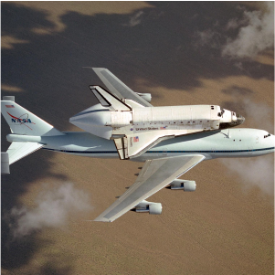
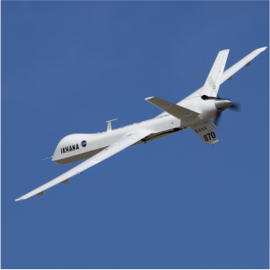

ABOUT
NASA TODAY
NASA explores the unknown in air and space, innovates for the benefit of humanity, and inspires the world through discovery. For more than 65 years, NASA has made the seemingly impossible, possible. At its 20 centers and facilities across the country and with U.S. commercial companies and international partners, NASA leads studying Earth science, including climate, our Sun, solar system, and the larger universe.
A History of Innovation When NASA opened for business on October 1, 1958, it accelerated the work already started on human and robotic spaceflight, and over the last 65 years it has continued to push the boundaries of aeronautics and space exploration. Now NASA is preparing to take humankind farther than ever before, as it helps to foster a robust commercial space economy near Earth, and pioneers further human and robotic exploration as we venture into deep space.
looking forward
NASA's future will continue to be a story of human exploration, technology, and science. We will go back to the Moon to learn more about what it will take to support human exploration to Mars and beyond. We will continue to nurture the development of a vibrant low-Earth orbit economy that builds on the work done to date by the International Space Station. NASA engineers will develop new technologies to improve air transport at home and meet the challenges of advanced space exploration. Our scientists will work to increase an understanding of our planet and our place in the universe.
-
- B-52B
-

- STS-114
-
- F-18
-
- X-43A
-

- ED07